1 introducción
En el dia de hoy vamos a hacer un tutorial paso a paso de como subir tu página a un repositorio de github, gracias a los problemas que he visto que surgieron.
2 crear el proyecto normal en R Quarto
primero haremos todo lo que tengamos que hacer en el documento de quarto, poner o quitar información, eso depende de que es lo que ustedes quieran mostrar. Después lo guardamos como index (muy importante)
3 paquetes
cuando ya esté terminado el Quarto y lo hayamos guardado vamos a ir a ese icono debajo de files

y creamos un R Script (o podemos oprimir ctrl + shift + N en el teclado)
En el R Script lo primero que vamos a hacer es escribir install.packages(“usethis”) (las comillas son importantes) esto se hace para instalar los paquetes necesarios para subir esto a git. Después le damos a “Run” o podemos oprimir ctrl + enter para que se instalen los paquetes
lo segundo que haremos es escribir library(usethis) (importante que sea sin comillas) esto para activar dichos paquetes. Lo mismo de Run o ctrl + enter
después escribiremos use_git() y otra vez, Run Después de runnear (darle run) les aparecerá 3 opciones, 2 negativas y una postivia, le darán a la positiva y esperán
después use_github() y otra vez Run, aquí ya debió haber creado el repositorio y les abrirá automáticamente el navegador
debería quedar de esta manera:

4 repositorio
aquí el repositorio estará creado, pero no servirá para nada por ahora, primero lo que haremos será escribir en el script use_github_pages() y le dan a run. Esto creará otra rama (o branch) aparte de la llamada “masters”.
El problema es que esta rama no tiene nada… y si esta rama no tiene nada no podemos desplegar la página, entonces ¿cómo podemos hacer que si tenga algo?
En la página del github, le daremos a settings
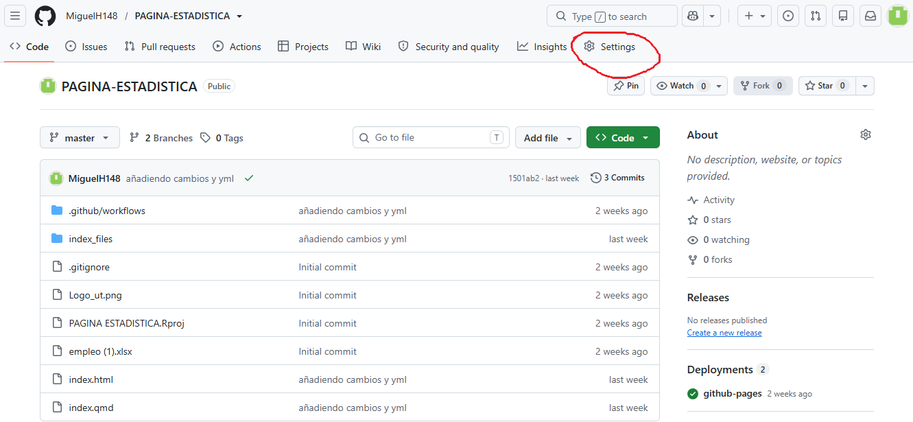
después a actions
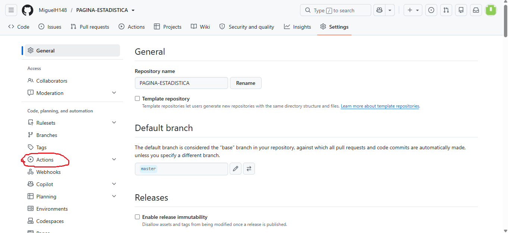
después a general
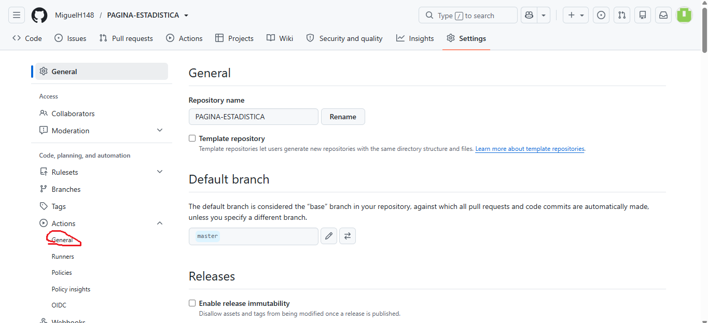
bajamos hasta donde dice workflows permisions y seleccionamos la primera opción
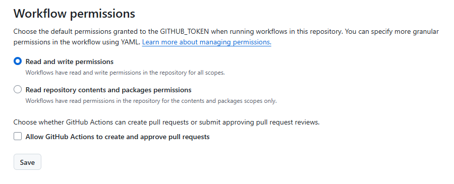
Después volvemos al R y creamos unas cuantas carpetas (le damos a files y new folder) la primera carpeta se llamará .github
la primera carpeta se llamará .github
la segunda carpeta se llamará workflows
y lo tercero no será una carpeta, será un archivo de texto, osea que le daremos al que está al lado de new folder, osea new file y seleccionarmeos text file

este archivo lo tienen que llamara como deploy-gh-pages.yml
se les abrirá un archivo de texto en blanco, en ese archivo de texto lo que tienen que hacer es copiar y pergar lo que aparece en el siguiente link:
https://gist.githubusercontent.com/irwingss/c7993e545654740ef21df3ccba9b2add/raw/aa71e4739f874f537145b6ae39cbdb90cec386fc/gistfile1.txt
renderizan y guardan el archivo de texto
5 subir al repositorio
ahora vamos con la “ultima parte” en la cual tendremos que ir a terminal
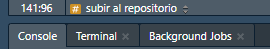
y aquí tenemos que escribir las siguientes 3 cosas:1. git add .
2. git commit -m “añadiendo cambios y yml” nota: lo que está entre las comillas es solo un mensaje, no necesariamente tiene que ser ese, con tal de que esté en comillas todo bien (ya lo intenté)
3. git push
es importante que recuerden bien los espacios y signos o si no no funcionará
NOTA IMPORTANTE: para hacer todo esto primero debieron haber hecho lo de iniciar sesión en github, hacer lo del gitbash (o la aplicación que dejaré como imagen abajo) y crear el token (no lo creía necesario pero parece que si lo es, al menos la primera vez que se hace)
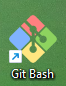
6 los verdaderos últimos pasos
cuando hayamos hecho todo eso nos vamos al repositorio y volvemos a cargar la página hasta que el simbolo que señalaré tenga un chulo
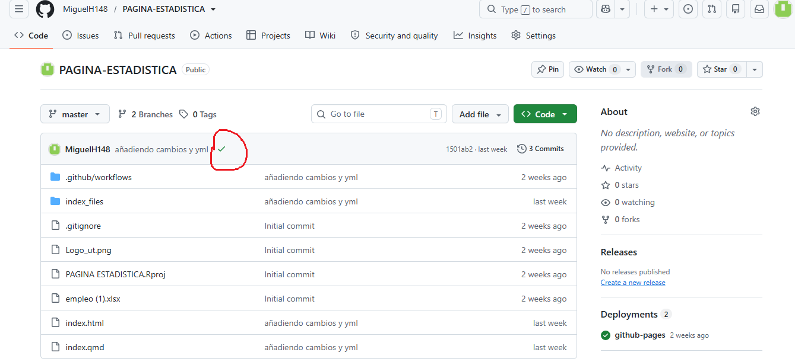
después de que ya esté ese simbolo vamos a volver a ir a settings
pero ahora bajamos hasta donde dice pages
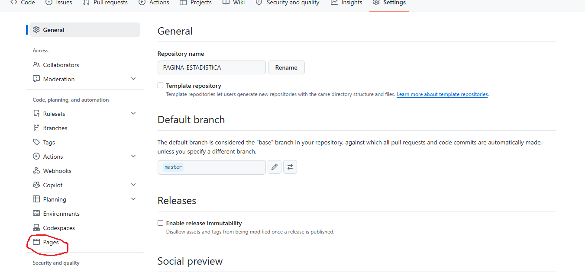
y como podemos observar hay un lugar donde dice “none” (lo que está encerrado en verde) le damos ahí, y vemos 3 opciones, seleccionamos la que dice “gh-pages” y después le damos a “save”
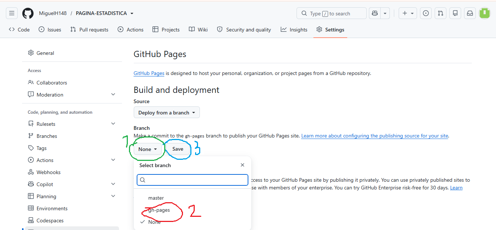
después vamos de nuevo a “code”
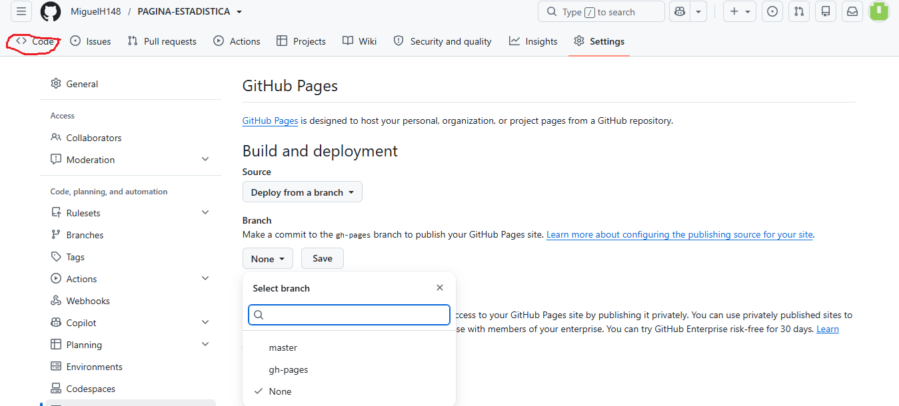
y ahí le damos a voler a cargar hasta que en la parte donde dice deployments (o lo que está encerrado en su defecto) diga now (en lugar de “2 weeks ago en mi caso”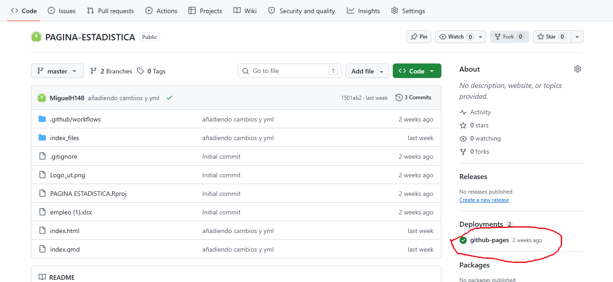
7 celebrar
y listo, en teoría ya debería estar… si no les funciona preguntenle a Santiago como es su método, sin más que decir, me despido
chao